import tensorflow as tf
import numpy as np
from tensorflow import keras
import matplotlib.pyplot as plt
import seaborn as sns
from sklearn.linear_model import LinearRegressionHello Neural Networks
Hello Neural Networks.
Important supporting libraries
Prepare a simple Neural Network
model = tf.keras.Sequential([keras.layers.Dense(units=1, input_shape=[1])])
model.compile(optimizer='sgd', loss='mean_squared_error')Prepare a simple dataset
xs = np.array([-1.0, 0.0, 1.0, 2.0, 3.0, 4.0], dtype=float)
ys = np.array([-2.0, 0.0, 2.0, 4.0, 6.0, 8.0], dtype=float)
print(xs)
print(ys)[-1. 0. 1. 2. 3. 4.]
[-2. 0. 2. 4. 6. 8.]ys = 2* xs
Visualize the dataset
sns.relplot(x = xs, y = ys)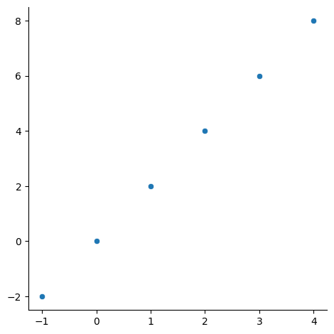
Train the Neural Network
model.fit(xs, ys, epochs=1)Epoch 1/50
1/1 [==============================] - 0s 250ms/step - loss: 63.6840
Epoch 2/50
1/1 [==============================] - 0s 2ms/step - loss: 50.2190
Epoch 3/50
1/1 [==============================] - 0s 2ms/step - loss: 39.6231
Epoch 4/50
1/1 [==============================] - 0s 3ms/step - loss: 31.2844
Epoch 5/50
1/1 [==============================] - 0s 2ms/step - loss: 24.7216
Epoch 6/50
1/1 [==============================] - 0s 2ms/step - loss: 19.5561
Epoch 7/50
1/1 [==============================] - 0s 2ms/step - loss: 15.4899
Epoch 8/50
1/1 [==============================] - 0s 2ms/step - loss: 12.2887
Epoch 9/50
1/1 [==============================] - 0s 17ms/step - loss: 9.7681
Epoch 10/50
1/1 [==============================] - 0s 2ms/step - loss: 7.7829
Epoch 11/50
1/1 [==============================] - 0s 2ms/step - loss: 6.2191
Epoch 12/50
1/1 [==============================] - 0s 2ms/step - loss: 4.9868
Epoch 13/50
1/1 [==============================] - 0s 2ms/step - loss: 4.0153
Epoch 14/50
1/1 [==============================] - 0s 2ms/step - loss: 3.2491
Epoch 15/50
1/1 [==============================] - 0s 2ms/step - loss: 2.6445
Epoch 16/50
1/1 [==============================] - 0s 2ms/step - loss: 2.1669
Epoch 17/50
1/1 [==============================] - 0s 2ms/step - loss: 1.7895
Epoch 18/50
1/1 [==============================] - 0s 2ms/step - loss: 1.4908
Epoch 19/50
1/1 [==============================] - 0s 2ms/step - loss: 1.2540
Epoch 20/50
1/1 [==============================] - 0s 2ms/step - loss: 1.0661
Epoch 21/50
1/1 [==============================] - 0s 2ms/step - loss: 0.9167
Epoch 22/50
1/1 [==============================] - 0s 2ms/step - loss: 0.7975
Epoch 23/50
1/1 [==============================] - 0s 58ms/step - loss: 0.7021
Epoch 24/50
1/1 [==============================] - 0s 3ms/step - loss: 0.6256
Epoch 25/50
1/1 [==============================] - 0s 2ms/step - loss: 0.5639
Epoch 26/50
1/1 [==============================] - 0s 2ms/step - loss: 0.5138
Epoch 27/50
1/1 [==============================] - 0s 2ms/step - loss: 0.4730
Epoch 28/50
1/1 [==============================] - 0s 2ms/step - loss: 0.4395
Epoch 29/50
1/1 [==============================] - 0s 2ms/step - loss: 0.4118
Epoch 30/50
1/1 [==============================] - 0s 2ms/step - loss: 0.3886
Epoch 31/50
1/1 [==============================] - 0s 2ms/step - loss: 0.3690
Epoch 32/50
1/1 [==============================] - 0s 2ms/step - loss: 0.3523
Epoch 33/50
1/1 [==============================] - 0s 2ms/step - loss: 0.3379
Epoch 34/50
1/1 [==============================] - 0s 2ms/step - loss: 0.3253
Epoch 35/50
1/1 [==============================] - 0s 2ms/step - loss: 0.3142
Epoch 36/50
1/1 [==============================] - 0s 2ms/step - loss: 0.3042
Epoch 37/50
1/1 [==============================] - 0s 2ms/step - loss: 0.2952
Epoch 38/50
1/1 [==============================] - 0s 3ms/step - loss: 0.2870
Epoch 39/50
1/1 [==============================] - 0s 2ms/step - loss: 0.2794
Epoch 40/50
1/1 [==============================] - 0s 2ms/step - loss: 0.2723
Epoch 41/50
1/1 [==============================] - 0s 2ms/step - loss: 0.2657
Epoch 42/50
1/1 [==============================] - 0s 2ms/step - loss: 0.2594
Epoch 43/50
1/1 [==============================] - 0s 2ms/step - loss: 0.2534
Epoch 44/50
1/1 [==============================] - 0s 2ms/step - loss: 0.2477
Epoch 45/50
1/1 [==============================] - 0s 2ms/step - loss: 0.2422
Epoch 46/50
1/1 [==============================] - 0s 2ms/step - loss: 0.2369
Epoch 47/50
1/1 [==============================] - 0s 2ms/step - loss: 0.2318
Epoch 48/50
1/1 [==============================] - 0s 2ms/step - loss: 0.2268
Epoch 49/50
1/1 [==============================] - 0s 2ms/step - loss: 0.2220
Epoch 50/50
1/1 [==============================] - 0s 2ms/step - loss: 0.2173<keras.callbacks.History at 0x7f6e600874c0>Try a test dataset
t = np.array([5.0, 6.0, 7.0])
print(model.predict(t))1/1 [==============================] - 0s 61ms/step
[[ 9.58381 ]
[11.3789835]
[13.174158 ]]Try with the training dataset
y_hat = model.predict(xs)[:,0]
print(xs)
print(ys)
print(y_hat)1/1 [==============================] - 0s 15ms/step
[-1. 0. 1. 2. 3. 4.]
[-2. 0. 2. 4. 6. 8.]
[-1.1872342 0.6079398 2.4031138 4.198288 5.9934616 7.7886357]Visualize the result
plt.scatter(xs, y_hat, label = 'predicted')
plt.scatter(xs, ys, label = 'actual')
plt.legend()<matplotlib.legend.Legend at 0x7f6e48370a00>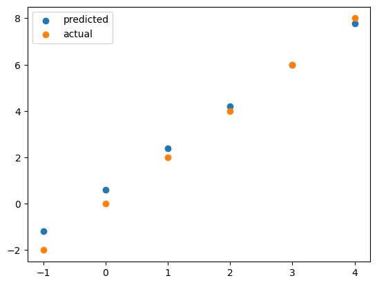
It might not be clear how the NN is trained. Let’s show it step by step.
model = tf.keras.Sequential([keras.layers.Dense(units=1, input_shape=[1])])
model.compile(optimizer='sgd', loss='mean_squared_error')model.fit(xs, ys, epochs=1)
y_hat = model.predict(xs)[:,0]
plt.scatter(xs, y_hat, label = 'predicted')
plt.scatter(xs, ys, label = 'actual')
plt.legend()1/1 [==============================] - 0s 158ms/step - loss: 59.5742
1/1 [==============================] - 0s 36ms/step<matplotlib.legend.Legend at 0x7f6e30d31b20>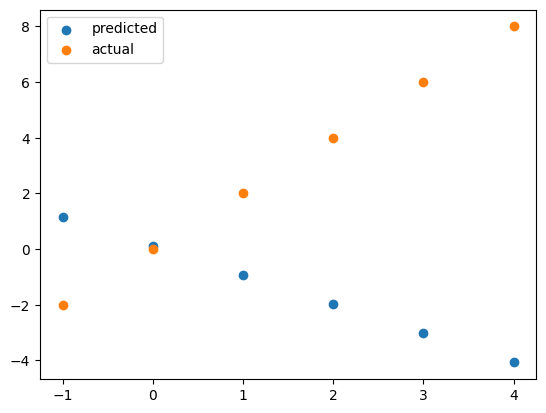
Compare NN with Linear Regression
Round 1: Linear relationship with few data points
Train a Linear Regression model
xs = xs.reshape(-1,1)
t = t.reshape(-1, 1)
reg = LinearRegression().fit(xs, ys)
print(reg.predict(t))[10. 12. 14.]Conclusion: Linear Regression Won!
We learned Neural Network is not as good as Linear Regression simply beacause we have so few data. Let’s create a larger data set then.
Round 2: Linear relationship with many data points
x_large = np.random.uniform(-10, 10, (10000))
x_large.sort()
y_large = x_large*2
print(x_large)
print(y_large)[-9.99885156 -9.99196827 -9.98839674 ... 9.98231861 9.99611098
9.99823514]
[-19.99770313 -19.98393653 -19.97679347 ... 19.96463721 19.99222197
19.99647028]Let’s visualize the new dataset
sns.relplot(x = x_large, y = y_large)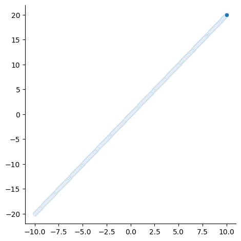
Let’s train the neural network again
model = tf.keras.Sequential([keras.layers.Dense(units=1, input_shape=[1])])
model.compile(optimizer='sgd', loss='mean_squared_error')
model.fit(x_large, y_large, epochs=50)Epoch 1/50
313/313 [==============================] - 0s 929us/step - loss: 0.2925
Epoch 2/50
313/313 [==============================] - 0s 917us/step - loss: 4.1208e-11
Epoch 3/50
313/313 [==============================] - 0s 900us/step - loss: 3.2328e-15
Epoch 4/50
313/313 [==============================] - 0s 900us/step - loss: 2.9490e-16
Epoch 5/50
313/313 [==============================] - 0s 808us/step - loss: 1.1694e-16
Epoch 6/50
313/313 [==============================] - 0s 878us/step - loss: 2.1803e-17
Epoch 7/50
313/313 [==============================] - 0s 936us/step - loss: 1.7773e-17
Epoch 8/50
313/313 [==============================] - 0s 891us/step - loss: 1.5041e-17
Epoch 9/50
313/313 [==============================] - 0s 931us/step - loss: 9.5303e-18
Epoch 10/50
313/313 [==============================] - 0s 787us/step - loss: 2.9244e-18
Epoch 11/50
313/313 [==============================] - 0s 909us/step - loss: 2.6396e-18
Epoch 12/50
313/313 [==============================] - 0s 890us/step - loss: 2.4627e-18
Epoch 13/50
313/313 [==============================] - 0s 904us/step - loss: 2.0767e-18
Epoch 14/50
313/313 [==============================] - 0s 806us/step - loss: 1.9257e-18
Epoch 15/50
313/313 [==============================] - 0s 902us/step - loss: 1.8228e-18
Epoch 16/50
313/313 [==============================] - 0s 913us/step - loss: 9.9992e-19
Epoch 17/50
313/313 [==============================] - 0s 882us/step - loss: 3.9834e-19
Epoch 18/50
313/313 [==============================] - 0s 928us/step - loss: 3.8860e-19
Epoch 19/50
313/313 [==============================] - 0s 830us/step - loss: 3.6854e-19
Epoch 20/50
313/313 [==============================] - 0s 896us/step - loss: 3.5967e-19
Epoch 21/50
313/313 [==============================] - 0s 894us/step - loss: 3.5462e-19
Epoch 22/50
313/313 [==============================] - 0s 932us/step - loss: 2.7860e-19
Epoch 23/50
313/313 [==============================] - 0s 885us/step - loss: 2.4379e-19
Epoch 24/50
313/313 [==============================] - 0s 800us/step - loss: 2.3807e-19
Epoch 25/50
313/313 [==============================] - 0s 924us/step - loss: 2.3670e-19
Epoch 26/50
313/313 [==============================] - 0s 894us/step - loss: 2.1936e-19
Epoch 27/50
313/313 [==============================] - 0s 910us/step - loss: 2.1812e-19
Epoch 28/50
313/313 [==============================] - 0s 816us/step - loss: 2.1344e-19
Epoch 29/50
313/313 [==============================] - 0s 900us/step - loss: 2.0123e-19
Epoch 30/50
313/313 [==============================] - 0s 881us/step - loss: 6.2450e-20
Epoch 31/50
313/313 [==============================] - 0s 897us/step - loss: 6.2450e-20
Epoch 32/50
313/313 [==============================] - 0s 843us/step - loss: 6.1474e-20
Epoch 33/50
313/313 [==============================] - 0s 801us/step - loss: 6.1474e-20
Epoch 34/50
313/313 [==============================] - 0s 903us/step - loss: 5.8438e-20
Epoch 35/50
313/313 [==============================] - 0s 910us/step - loss: 5.7831e-20
Epoch 36/50
313/313 [==============================] - 0s 925us/step - loss: 5.7549e-20
Epoch 37/50
313/313 [==============================] - 0s 793us/step - loss: 5.6986e-20
Epoch 38/50
313/313 [==============================] - 0s 904us/step - loss: 5.6986e-20
Epoch 39/50
313/313 [==============================] - 0s 903us/step - loss: 4.6577e-20
Epoch 40/50
313/313 [==============================] - 0s 924us/step - loss: 4.6577e-20
Epoch 41/50
313/313 [==============================] - 0s 892us/step - loss: 4.6577e-20
Epoch 42/50
313/313 [==============================] - 0s 799us/step - loss: 4.5862e-20
Epoch 43/50
313/313 [==============================] - 0s 938us/step - loss: 4.5862e-20
Epoch 44/50
313/313 [==============================] - 0s 866us/step - loss: 4.4561e-20
Epoch 45/50
313/313 [==============================] - 0s 937us/step - loss: 4.3260e-20
Epoch 46/50
313/313 [==============================] - 0s 901us/step - loss: 4.3260e-20
Epoch 47/50
313/313 [==============================] - 0s 961us/step - loss: 4.2869e-20
Epoch 48/50
313/313 [==============================] - 0s 840us/step - loss: 4.2674e-20
Epoch 49/50
313/313 [==============================] - 0s 884us/step - loss: 4.1286e-20
Epoch 50/50
313/313 [==============================] - 0s 933us/step - loss: 6.5919e-21<keras.callbacks.History at 0x7f6e30bbcca0>Let’s observe the result
t = np.array([5.0, 6.0, 7.0])
print(model.predict(t))1/1 [==============================] - 0s 57ms/step
[[10.]
[12.]
[14.]]Conclusion:
With many datapoints, a Neural Network can do as well as a Linear Regression model (for a simple straightline relationship)
Round 3: Multi-variable Linear relationship.
We tried one variable input, how about two variables?
Prepare a NN with 2 inputs
model = tf.keras.Sequential([keras.layers.Dense(units=1, input_shape=[2])])
model.compile(optimizer='sgd', loss='mean_squared_error')Prepare some 2-dimensional datapoints and train the model
xs = np.array([[-1, -1], [0, 1], [1, 2], [-1, 0]])
ys = np.array([-2, 1, 3, -1])
model.fit(xs, ys, epochs = 50)
#ys = xs1 + xs2Epoch 1/50
1/1 [==============================] - 0s 169ms/step - loss: 3.2576
Epoch 2/50
1/1 [==============================] - 0s 2ms/step - loss: 3.0287
Epoch 3/50
1/1 [==============================] - 0s 2ms/step - loss: 2.8169
Epoch 4/50
1/1 [==============================] - 0s 2ms/step - loss: 2.6208
Epoch 5/50
1/1 [==============================] - 0s 2ms/step - loss: 2.4392
Epoch 6/50
1/1 [==============================] - 0s 3ms/step - loss: 2.2709
Epoch 7/50
1/1 [==============================] - 0s 2ms/step - loss: 2.1151
Epoch 8/50
1/1 [==============================] - 0s 2ms/step - loss: 1.9707
Epoch 9/50
1/1 [==============================] - 0s 2ms/step - loss: 1.8368
Epoch 10/50
1/1 [==============================] - 0s 2ms/step - loss: 1.7127
Epoch 11/50
1/1 [==============================] - 0s 2ms/step - loss: 1.5976
Epoch 12/50
1/1 [==============================] - 0s 2ms/step - loss: 1.4909
Epoch 13/50
1/1 [==============================] - 0s 2ms/step - loss: 1.3918
Epoch 14/50
1/1 [==============================] - 0s 2ms/step - loss: 1.2999
Epoch 15/50
1/1 [==============================] - 0s 2ms/step - loss: 1.2146
Epoch 16/50
1/1 [==============================] - 0s 2ms/step - loss: 1.1354
Epoch 17/50
1/1 [==============================] - 0s 2ms/step - loss: 1.0618
Epoch 18/50
1/1 [==============================] - 0s 2ms/step - loss: 0.9934
Epoch 19/50
1/1 [==============================] - 0s 2ms/step - loss: 0.9299
Epoch 20/50
1/1 [==============================] - 0s 62ms/step - loss: 0.8709
Epoch 21/50
1/1 [==============================] - 0s 3ms/step - loss: 0.8159
Epoch 22/50
1/1 [==============================] - 0s 2ms/step - loss: 0.7649
Epoch 23/50
1/1 [==============================] - 0s 2ms/step - loss: 0.7173
Epoch 24/50
1/1 [==============================] - 0s 2ms/step - loss: 0.6731
Epoch 25/50
1/1 [==============================] - 0s 2ms/step - loss: 0.6319
Epoch 26/50
1/1 [==============================] - 0s 2ms/step - loss: 0.5936
Epoch 27/50
1/1 [==============================] - 0s 2ms/step - loss: 0.5578
Epoch 28/50
1/1 [==============================] - 0s 2ms/step - loss: 0.5246
Epoch 29/50
1/1 [==============================] - 0s 2ms/step - loss: 0.4935
Epoch 30/50
1/1 [==============================] - 0s 2ms/step - loss: 0.4646
Epoch 31/50
1/1 [==============================] - 0s 2ms/step - loss: 0.4376
Epoch 32/50
1/1 [==============================] - 0s 2ms/step - loss: 0.4124
Epoch 33/50
1/1 [==============================] - 0s 2ms/step - loss: 0.3889
Epoch 34/50
1/1 [==============================] - 0s 2ms/step - loss: 0.3669
Epoch 35/50
1/1 [==============================] - 0s 3ms/step - loss: 0.3464
Epoch 36/50
1/1 [==============================] - 0s 2ms/step - loss: 0.3272
Epoch 37/50
1/1 [==============================] - 0s 2ms/step - loss: 0.3093
Epoch 38/50
1/1 [==============================] - 0s 2ms/step - loss: 0.2926
Epoch 39/50
1/1 [==============================] - 0s 2ms/step - loss: 0.2769
Epoch 40/50
1/1 [==============================] - 0s 2ms/step - loss: 0.2622
Epoch 41/50
1/1 [==============================] - 0s 2ms/step - loss: 0.2485
Epoch 42/50
1/1 [==============================] - 0s 2ms/step - loss: 0.2357
Epoch 43/50
1/1 [==============================] - 0s 2ms/step - loss: 0.2236
Epoch 44/50
1/1 [==============================] - 0s 2ms/step - loss: 0.2123
Epoch 45/50
1/1 [==============================] - 0s 2ms/step - loss: 0.2018
Epoch 46/50
1/1 [==============================] - 0s 2ms/step - loss: 0.1918
Epoch 47/50
1/1 [==============================] - 0s 2ms/step - loss: 0.1825
Epoch 48/50
1/1 [==============================] - 0s 2ms/step - loss: 0.1738
Epoch 49/50
1/1 [==============================] - 0s 2ms/step - loss: 0.1656
Epoch 50/50
1/1 [==============================] - 0s 2ms/step - loss: 0.1579<keras.callbacks.History at 0x7f6e307a0fa0>Test the model
t = np.array([[3, 4], [0, 9], [-2, 2]])
print(model.predict(t))1/1 [==============================] - 0s 29ms/step
[[ 5.6687555]
[11.833715 ]
[ 2.1177921]]Prepare a Linear Regression and test
reg = LinearRegression().fit(xs, ys)
print(reg.predict(t))[ 7.00000000e+00 9.00000000e+00 -1.16573418e-15]Conclusion: Still LR won.
Maybe we need more data
x_large = np.random.uniform(-10, 10, (10000, 2))
print(x_large)
y_large = np.sum(x_large, axis = 1)
print(y_large)[[ 3.83318192e+00 -9.69160794e+00]
[-1.60615131e-03 -6.14233634e+00]
[-2.91511449e+00 -1.25782616e-01]
...
[ 2.52837268e+00 -5.01966462e+00]
[ 2.64744448e+00 1.82292700e+00]
[-1.16130409e+00 8.95057456e+00]]
[-5.85842602 -6.14394249 -3.04089711 ... -2.49129194 4.47037148
7.78927047]Train the NN again with more data
model = tf.keras.Sequential([keras.layers.Dense(units=1, input_shape=[2])])
model.compile(optimizer='sgd', loss='mean_squared_error')
model.fit(x_large, y_large, epochs = 50)Epoch 1/50
313/313 [==============================] - 0s 947us/step - loss: 0.2193
Epoch 2/50
313/313 [==============================] - 0s 894us/step - loss: 1.9676e-11
Epoch 3/50
313/313 [==============================] - 0s 779us/step - loss: 1.3513e-13
Epoch 4/50
313/313 [==============================] - 0s 816us/step - loss: 1.3398e-13
Epoch 5/50
313/313 [==============================] - 0s 898us/step - loss: 1.3539e-13
Epoch 6/50
313/313 [==============================] - 0s 895us/step - loss: 1.3393e-13
Epoch 7/50
313/313 [==============================] - 0s 922us/step - loss: 1.3474e-13
Epoch 8/50
313/313 [==============================] - 0s 800us/step - loss: 1.3396e-13
Epoch 9/50
313/313 [==============================] - 0s 893us/step - loss: 1.3556e-13
Epoch 10/50
313/313 [==============================] - 0s 891us/step - loss: 1.3740e-13
Epoch 11/50
313/313 [==============================] - 0s 957us/step - loss: 1.3395e-13
Epoch 12/50
313/313 [==============================] - 0s 875us/step - loss: 1.3458e-13
Epoch 13/50
313/313 [==============================] - 0s 823us/step - loss: 1.3440e-13
Epoch 14/50
313/313 [==============================] - 0s 890us/step - loss: 1.3558e-13
Epoch 15/50
313/313 [==============================] - 0s 901us/step - loss: 1.3393e-13
Epoch 16/50
313/313 [==============================] - 0s 929us/step - loss: 1.3768e-13
Epoch 17/50
313/313 [==============================] - 0s 798us/step - loss: 1.3458e-13
Epoch 18/50
313/313 [==============================] - 0s 844us/step - loss: 1.3681e-13
Epoch 19/50
313/313 [==============================] - 0s 787us/step - loss: 1.3394e-13
Epoch 20/50
313/313 [==============================] - 0s 904us/step - loss: 1.3585e-13
Epoch 21/50
313/313 [==============================] - 0s 877us/step - loss: 1.3395e-13
Epoch 22/50
313/313 [==============================] - 0s 944us/step - loss: 1.3397e-13
Epoch 23/50
313/313 [==============================] - 0s 794us/step - loss: 1.3392e-13
Epoch 24/50
313/313 [==============================] - 0s 897us/step - loss: 1.3682e-13
Epoch 25/50
313/313 [==============================] - 0s 913us/step - loss: 1.3663e-13
Epoch 26/50
313/313 [==============================] - 0s 900us/step - loss: 1.3462e-13
Epoch 27/50
313/313 [==============================] - 0s 796us/step - loss: 1.3447e-13
Epoch 28/50
313/313 [==============================] - 0s 894us/step - loss: 1.3523e-13
Epoch 29/50
313/313 [==============================] - 0s 929us/step - loss: 1.3393e-13
Epoch 30/50
313/313 [==============================] - 0s 885us/step - loss: 1.3542e-13
Epoch 31/50
313/313 [==============================] - 0s 805us/step - loss: 1.3394e-13
Epoch 32/50
313/313 [==============================] - 0s 889us/step - loss: 1.3394e-13
Epoch 33/50
313/313 [==============================] - 0s 915us/step - loss: 1.3561e-13
Epoch 34/50
313/313 [==============================] - 0s 900us/step - loss: 1.3395e-13
Epoch 35/50
313/313 [==============================] - 0s 799us/step - loss: 1.3396e-13
Epoch 36/50
313/313 [==============================] - 0s 845us/step - loss: 1.3502e-13
Epoch 37/50
313/313 [==============================] - 0s 918us/step - loss: 1.3395e-13
Epoch 38/50
313/313 [==============================] - 0s 907us/step - loss: 1.3394e-13
Epoch 39/50
313/313 [==============================] - 0s 870us/step - loss: 1.3396e-13
Epoch 40/50
313/313 [==============================] - 0s 938us/step - loss: 1.3496e-13
Epoch 41/50
313/313 [==============================] - 0s 810us/step - loss: 1.3392e-13
Epoch 42/50
313/313 [==============================] - 0s 889us/step - loss: 1.3393e-13
Epoch 43/50
313/313 [==============================] - 0s 918us/step - loss: 1.3489e-13
Epoch 44/50
313/313 [==============================] - 0s 917us/step - loss: 1.3433e-13
Epoch 45/50
313/313 [==============================] - 0s 904us/step - loss: 1.3393e-13
Epoch 46/50
313/313 [==============================] - 0s 820us/step - loss: 1.3394e-13
Epoch 47/50
313/313 [==============================] - 0s 921us/step - loss: 1.3530e-13
Epoch 48/50
313/313 [==============================] - 0s 911us/step - loss: 1.3525e-13
Epoch 49/50
313/313 [==============================] - 0s 903us/step - loss: 1.3398e-13
Epoch 50/50
313/313 [==============================] - 0s 914us/step - loss: 1.3516e-13<keras.callbacks.History at 0x7f6e30737f10>Let’s observe the result
t = np.array([[3, 4], [0, 9], [-2, 2]])
print(model.predict(t))WARNING:tensorflow:5 out of the last 6 calls to <function Model.make_predict_function.<locals>.predict_function at 0x7f6e3048a280> triggered tf.function retracing. Tracing is expensive and the excessive number of tracings could be due to (1) creating @tf.function repeatedly in a loop, (2) passing tensors with different shapes, (3) passing Python objects instead of tensors. For (1), please define your @tf.function outside of the loop. For (2), @tf.function has reduce_retracing=True option that can avoid unnecessary retracing. For (3), please refer to https://www.tensorflow.org/guide/function#controlling_retracing and https://www.tensorflow.org/api_docs/python/tf/function for more details.
1/1 [==============================] - 0s 37ms/step
[[7.000000e+00]
[9.000000e+00]
[7.636544e-09]]Conclusion:
OK.. Again, Neural Network is just as good as Linear Regression
Round4: Let’s learn some non-linear relationship then
Create a square root relationship
import math
size = 100000
xs = np.random.uniform(0, 10, (size))
xs.sort()
ys = [0] * size
for i in range(size):
ys[i] = math.sqrt(xs[i])
ys = np.array(ys)Visualize the relationship
sns.scatterplot(x = xs, y = ys)<AxesSubplot: >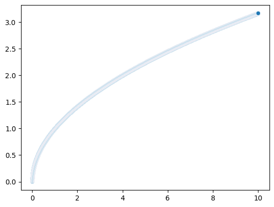
Train a deep neural network
model = keras.Sequential([
tf.keras.layers.Dense(64, input_shape = [1]),
tf.keras.layers.Dense(64, activation = 'sigmoid'),
tf.keras.layers.Dense(64, activation = 'sigmoid'),
tf.keras.layers.Dense(1)
])
model.compile(optimizer='sgd', loss='mean_squared_error')
model.fit(xs, ys, epochs=50)Epoch 1/50
3125/3125 [==============================] - 4s 1ms/step - loss: 0.0234
Epoch 2/50
3125/3125 [==============================] - 4s 1ms/step - loss: 0.0043
Epoch 3/50
3125/3125 [==============================] - 4s 1ms/step - loss: 0.0041
Epoch 4/50
3125/3125 [==============================] - 4s 1ms/step - loss: 0.0038
Epoch 5/50
3125/3125 [==============================] - 4s 1ms/step - loss: 0.0034
Epoch 6/50
3125/3125 [==============================] - 4s 1ms/step - loss: 0.0029
Epoch 7/50
3125/3125 [==============================] - 4s 1ms/step - loss: 0.0025
Epoch 8/50
3125/3125 [==============================] - 4s 1ms/step - loss: 0.0020
Epoch 9/50
3125/3125 [==============================] - 4s 1ms/step - loss: 0.0016
Epoch 10/50
3125/3125 [==============================] - 4s 1ms/step - loss: 0.0013
Epoch 11/50
3125/3125 [==============================] - 4s 1ms/step - loss: 0.0011
Epoch 12/50
3125/3125 [==============================] - 4s 1ms/step - loss: 8.9498e-04
Epoch 13/50
3125/3125 [==============================] - 4s 1ms/step - loss: 7.5326e-04
Epoch 14/50
3125/3125 [==============================] - 4s 1ms/step - loss: 6.4453e-04
Epoch 15/50
3125/3125 [==============================] - 4s 1ms/step - loss: 5.6217e-04
Epoch 16/50
3125/3125 [==============================] - 4s 1ms/step - loss: 4.9794e-04
Epoch 17/50
3125/3125 [==============================] - 4s 1ms/step - loss: 4.4878e-04
Epoch 18/50
3125/3125 [==============================] - 4s 1ms/step - loss: 4.1082e-04
Epoch 19/50
3125/3125 [==============================] - 4s 1ms/step - loss: 3.8056e-04
Epoch 20/50
3125/3125 [==============================] - 4s 1ms/step - loss: 3.5716e-04
Epoch 21/50
3125/3125 [==============================] - 4s 1ms/step - loss: 3.3704e-04
Epoch 22/50
3125/3125 [==============================] - 4s 1ms/step - loss: 3.2141e-04
Epoch 23/50
3125/3125 [==============================] - 4s 1ms/step - loss: 3.0762e-04
Epoch 24/50
3125/3125 [==============================] - 4s 1ms/step - loss: 2.9600e-04
Epoch 25/50
3125/3125 [==============================] - 4s 1ms/step - loss: 2.8558e-04
Epoch 26/50
3125/3125 [==============================] - 4s 1ms/step - loss: 2.7660e-04
Epoch 27/50
3125/3125 [==============================] - 4s 1ms/step - loss: 2.6820e-04
Epoch 28/50
3125/3125 [==============================] - 4s 1ms/step - loss: 2.6049e-04
Epoch 29/50
3125/3125 [==============================] - 4s 1ms/step - loss: 2.5346e-04
Epoch 30/50
3125/3125 [==============================] - 4s 1ms/step - loss: 2.4675e-04
Epoch 31/50
3125/3125 [==============================] - 4s 1ms/step - loss: 2.4060e-04
Epoch 32/50
3125/3125 [==============================] - 4s 1ms/step - loss: 2.3468e-04
Epoch 33/50
3125/3125 [==============================] - 4s 1ms/step - loss: 2.2956e-04
Epoch 34/50
3125/3125 [==============================] - 4s 1ms/step - loss: 2.2430e-04
Epoch 35/50
3125/3125 [==============================] - 4s 1ms/step - loss: 2.1948e-04
Epoch 36/50
3125/3125 [==============================] - 4s 1ms/step - loss: 2.1484e-04
Epoch 37/50
3125/3125 [==============================] - 4s 1ms/step - loss: 2.1065e-04
Epoch 38/50
3125/3125 [==============================] - 4s 1ms/step - loss: 2.0669e-04
Epoch 39/50
3125/3125 [==============================] - 4s 1ms/step - loss: 2.0268e-04
Epoch 40/50
3125/3125 [==============================] - 4s 1ms/step - loss: 1.9908e-04
Epoch 41/50
3125/3125 [==============================] - 4s 1ms/step - loss: 1.9572e-04
Epoch 42/50
3125/3125 [==============================] - 4s 1ms/step - loss: 1.9252e-04
Epoch 43/50
3125/3125 [==============================] - 4s 1ms/step - loss: 1.8926e-04
Epoch 44/50
3125/3125 [==============================] - 4s 1ms/step - loss: 1.8630e-04
Epoch 45/50
3125/3125 [==============================] - 4s 1ms/step - loss: 1.8352e-04
Epoch 46/50
3125/3125 [==============================] - 4s 1ms/step - loss: 1.8086e-04
Epoch 47/50
3125/3125 [==============================] - 4s 1ms/step - loss: 1.7812e-04
Epoch 48/50
3125/3125 [==============================] - 4s 1ms/step - loss: 1.7575e-04
Epoch 49/50
3125/3125 [==============================] - 4s 1ms/step - loss: 1.7360e-04
Epoch 50/50
3125/3125 [==============================] - 4s 1ms/step - loss: 1.7137e-04<keras.callbacks.History at 0x7f6e07dc4d60>Observe the result and compare it with the training data
t = np.arange(0, 10,0.001)
plt.plot(t, model.predict(t), label = 'Prediction')
plt.plot(xs, ys, label = 'Actual')
plt.legend()WARNING:tensorflow:6 out of the last 7 calls to <function Model.make_predict_function.<locals>.predict_function at 0x7f6e300a6430> triggered tf.function retracing. Tracing is expensive and the excessive number of tracings could be due to (1) creating @tf.function repeatedly in a loop, (2) passing tensors with different shapes, (3) passing Python objects instead of tensors. For (1), please define your @tf.function outside of the loop. For (2), @tf.function has reduce_retracing=True option that can avoid unnecessary retracing. For (3), please refer to https://www.tensorflow.org/guide/function#controlling_retracing and https://www.tensorflow.org/api_docs/python/tf/function for more details.
313/313 [==============================] - 0s 824us/step<matplotlib.legend.Legend at 0x7f6e06b0f610>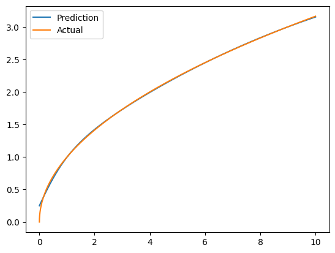
t = np.random.uniform(-10, 20, (100))
t.sort()
plt.plot(xs, ys)
plt.plot(t, model.predict(t))4/4 [==============================] - 0s 1ms/step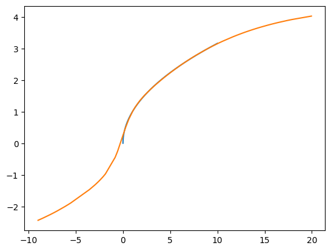
Train a Linear Regression model
xs = xs.reshape(-1, 1)
t = t.reshape(-1,1)
reg = LinearRegression().fit(xs, ys)
print(reg.predict(t))
plt.plot(xs, ys)
plt.plot(t, reg.predict(t))[-1.42569093 -1.30205542 -1.09828043 -1.04867071 -1.03044785 -0.98600164
-0.96865632 -0.9023989 -0.71853787 -0.69083633 -0.62417619 -0.60805478
-0.54816478 -0.05101514 0.08713875 0.13057828 0.13475977 0.13864074
0.16797048 0.17713 0.19727745 0.22970649 0.31431312 0.37632993
0.63559054 0.69113312 0.70850827 0.88635407 0.89324519 0.92056171
0.99958658 1.10725201 1.17041577 1.27106823 1.30859389 1.32635898
1.3309071 1.38584883 1.40506766 1.40536572 1.42412021 1.58427221
1.683908 1.70211711 1.70970825 1.717564 1.87871458 1.98351473
2.11698049 2.11766604 2.1471542 2.19429567 2.3539216 2.38552702
2.41069027 2.51431647 2.52863949 2.57170389 2.63274016 2.72523481
2.79188304 2.79576683 3.06269909 3.15886559 3.27573822 3.37948444
3.39700664 3.43381774 3.45008318 3.4932293 3.52634682 3.78797497
3.89568843 4.03664514 4.04758793 4.08558755 4.11044801 4.11900392
4.12712782 4.22970685 4.25126194 4.28865898 4.3163758 4.32361748
4.36675904 4.41386179 4.44791997 4.46648179 4.52180494 4.71696863
4.72037875 4.81396369 4.81829441 4.97508789 4.99347484 5.23088123
5.23426318 5.32470282 5.36773324 5.88546246]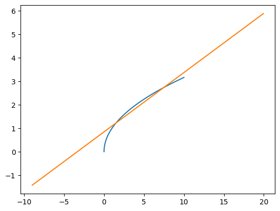
model = keras.Sequential([
tf.keras.layers.Dense(2, input_shape = [1]),
tf.keras.layers.Dense(64, activation = 'relu'),
tf.keras.layers.Dense(64, activation = 'relu'),
tf.keras.layers.Dense(1)
])
model.compile(optimizer='sgd', loss='mean_squared_error')
model.fit(xs, ys, epochs=50)Epoch 1/50
3125/3125 [==============================] - 4s 1ms/step - loss: 0.0147
Epoch 2/50
3125/3125 [==============================] - 4s 1ms/step - loss: 9.6181e-04
Epoch 3/50
3125/3125 [==============================] - 4s 1ms/step - loss: 3.7634e-04
Epoch 4/50
3125/3125 [==============================] - 4s 1ms/step - loss: 2.3227e-04
Epoch 5/50
3125/3125 [==============================] - 4s 1ms/step - loss: 1.7060e-04
Epoch 6/50
3125/3125 [==============================] - 4s 1ms/step - loss: 1.5108e-04
Epoch 7/50
3125/3125 [==============================] - 4s 1ms/step - loss: 1.6084e-04
Epoch 8/50
3125/3125 [==============================] - 4s 1ms/step - loss: 2.8447e-04
Epoch 9/50
3125/3125 [==============================] - 4s 1ms/step - loss: 1.2366e-04
Epoch 10/50
3125/3125 [==============================] - 4s 1ms/step - loss: 1.0303e-04
Epoch 11/50
3125/3125 [==============================] - 4s 1ms/step - loss: 1.5917e-04
Epoch 12/50
3125/3125 [==============================] - 4s 1ms/step - loss: 2.2970e-04
Epoch 13/50
3125/3125 [==============================] - 4s 1ms/step - loss: 6.9329e-05
Epoch 14/50
3125/3125 [==============================] - 4s 1ms/step - loss: 6.7857e-05
Epoch 15/50
3125/3125 [==============================] - 4s 1ms/step - loss: 6.9192e-05
Epoch 16/50
3125/3125 [==============================] - 4s 1ms/step - loss: 8.4352e-05
Epoch 17/50
3125/3125 [==============================] - 4s 1ms/step - loss: 9.0722e-05
Epoch 18/50
3125/3125 [==============================] - 4s 1ms/step - loss: 1.0956e-04
Epoch 19/50
3125/3125 [==============================] - 4s 1ms/step - loss: 1.0441e-04
Epoch 20/50
3125/3125 [==============================] - 4s 1ms/step - loss: 8.0185e-05
Epoch 21/50
3125/3125 [==============================] - 4s 1ms/step - loss: 1.3061e-04
Epoch 22/50
3125/3125 [==============================] - 4s 1ms/step - loss: 5.1739e-05
Epoch 23/50
3125/3125 [==============================] - 4s 1ms/step - loss: 7.8681e-05
Epoch 24/50
3125/3125 [==============================] - 4s 1ms/step - loss: 8.0863e-05
Epoch 25/50
3125/3125 [==============================] - 4s 1ms/step - loss: 1.1494e-04
Epoch 26/50
3125/3125 [==============================] - 4s 1ms/step - loss: 9.1416e-05
Epoch 27/50
3125/3125 [==============================] - 4s 1ms/step - loss: 4.6811e-05
Epoch 28/50
3125/3125 [==============================] - 4s 1ms/step - loss: 1.0611e-04
Epoch 29/50
3125/3125 [==============================] - 4s 1ms/step - loss: 7.2222e-05
Epoch 30/50
3125/3125 [==============================] - 4s 1ms/step - loss: 5.6831e-05
Epoch 31/50
3125/3125 [==============================] - 4s 1ms/step - loss: 5.6454e-05
Epoch 32/50
3125/3125 [==============================] - 4s 1ms/step - loss: 1.3881e-04
Epoch 33/50
3125/3125 [==============================] - 4s 1ms/step - loss: 5.8258e-05
Epoch 34/50
3125/3125 [==============================] - 4s 1ms/step - loss: 4.8645e-05
Epoch 35/50
3125/3125 [==============================] - 4s 1ms/step - loss: 5.5545e-05
Epoch 36/50
3125/3125 [==============================] - 4s 1ms/step - loss: 6.7602e-05
Epoch 37/50
3125/3125 [==============================] - 4s 1ms/step - loss: 1.1466e-04
Epoch 38/50
3125/3125 [==============================] - 4s 1ms/step - loss: 4.2625e-05
Epoch 39/50
3125/3125 [==============================] - 4s 1ms/step - loss: 3.9022e-05
Epoch 40/50
3125/3125 [==============================] - 4s 1ms/step - loss: 6.0201e-05
Epoch 41/50
3125/3125 [==============================] - 4s 1ms/step - loss: 4.7673e-05
Epoch 42/50
3125/3125 [==============================] - 4s 1ms/step - loss: 5.1120e-05
Epoch 43/50
3125/3125 [==============================] - 4s 1ms/step - loss: 1.1484e-04
Epoch 44/50
3125/3125 [==============================] - 5s 1ms/step - loss: 4.3091e-05
Epoch 45/50
3125/3125 [==============================] - 5s 2ms/step - loss: 3.7601e-05
Epoch 46/50
3125/3125 [==============================] - 5s 2ms/step - loss: 5.5629e-05
Epoch 47/50
3125/3125 [==============================] - 5s 2ms/step - loss: 3.8547e-05
Epoch 48/50
3125/3125 [==============================] - 5s 2ms/step - loss: 9.7383e-05
Epoch 49/50
3125/3125 [==============================] - 4s 1ms/step - loss: 3.4859e-05
Epoch 50/50
3125/3125 [==============================] - 4s 1ms/step - loss: 4.9066e-05<keras.callbacks.History at 0x7f6e0695a2b0>t = np.arange(0, 10, 0.01)
plt.plot(t, model.predict(t), label = "Prediction")
plt.plot(xs, ys, label = "Actual")
plt.legend()32/32 [==============================] - 0s 697us/step<matplotlib.legend.Legend at 0x7f6e0626ec10>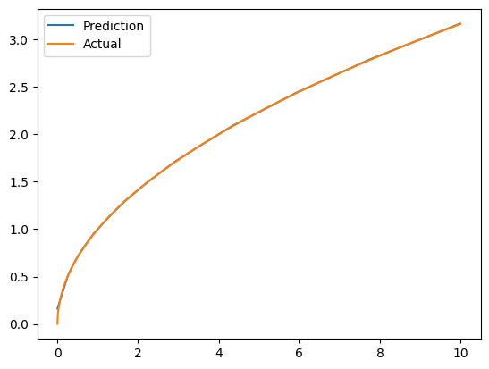
Round 5: Try an arbitrary relationship then
size = 100000
xs = np.random.uniform(0, 10, (size))
xs.sort()
ys = [0] * size
for i in range(size):
ys[i] = math.sqrt(xs[i])*2 - math.atan(xs[i])*3 + np.random.random()*0.01
ys = np.array(ys)
sns.scatterplot(x = xs, y = ys)<AxesSubplot: >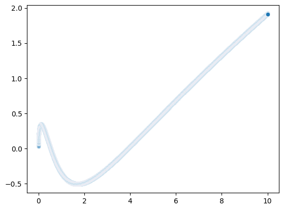
model = keras.Sequential([
tf.keras.layers.Dense(64, input_shape = [1]),
tf.keras.layers.Dense(64, activation='relu'),
tf.keras.layers.Dense(64, activation='relu'),
tf.keras.layers.Dense(1)
])
model.compile(optimizer='sgd', loss='mean_squared_error')
model.fit(xs, ys, epochs=5)Epoch 1/5
3125/3125 [==============================] - 4s 1ms/step - loss: 0.0125
Epoch 2/5
3125/3125 [==============================] - 4s 1ms/step - loss: 8.0274e-04
Epoch 3/5
3125/3125 [==============================] - 4s 1ms/step - loss: 1.8838e-04
Epoch 4/5
3125/3125 [==============================] - 4s 1ms/step - loss: 1.8755e-04
Epoch 5/5
3125/3125 [==============================] - 4s 1ms/step - loss: 1.5765e-04<keras.callbacks.History at 0x7f6de54a7910>t = np.arange(0, 10, 0.001)
plt.plot(xs, ys)
plt.plot(t, model.predict(t))313/313 [==============================] - 0s 764us/step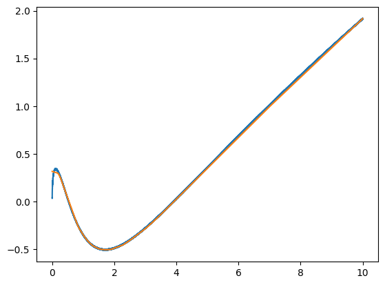
Round 6: Try another arbitrary relationship
#create dataset
size = 100000
np.random.seed(seed=2)
xs = np.random.uniform(low=0.0, high=10.0, size=(size))
xs.sort()
slope = 0.25
noise = 0.02
ys = np.sin(xs/(2)*np.pi) + np.random.normal(loc=0.0, scale=noise, size=(size,))
sns.relplot(x = xs, y = ys)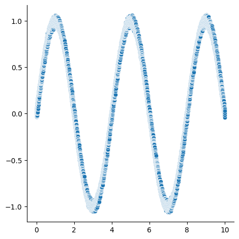
model = keras.Sequential([
tf.keras.layers.Dense(256, input_shape = [1]),
tf.keras.layers.Dense(256, activation='relu'),
tf.keras.layers.Dense(256, activation='relu'),
tf.keras.layers.Dense(256, activation='elu'),
tf.keras.layers.Dense(1)
])
model.compile(optimizer='sgd', loss='mean_squared_error')
model.fit(xs, ys, epochs=10)Epoch 1/10
3125/3125 [==============================] - 8s 3ms/step - loss: 0.3777
Epoch 2/10
3125/3125 [==============================] - 9s 3ms/step - loss: 0.2052
Epoch 3/10
3125/3125 [==============================] - 9s 3ms/step - loss: 0.0779
Epoch 4/10
3125/3125 [==============================] - 9s 3ms/step - loss: 0.0482
Epoch 5/10
3125/3125 [==============================] - 8s 3ms/step - loss: 0.0322
Epoch 6/10
3125/3125 [==============================] - 8s 3ms/step - loss: 0.0244
Epoch 7/10
3125/3125 [==============================] - 8s 3ms/step - loss: 0.0173
Epoch 8/10
3125/3125 [==============================] - 8s 3ms/step - loss: 0.0123
Epoch 9/10
3125/3125 [==============================] - 8s 3ms/step - loss: 0.0101
Epoch 10/10
3125/3125 [==============================] - 8s 3ms/step - loss: 0.0069<keras.callbacks.History at 0x7f6de553cf10>t = np.random.uniform(0, 10, (100000))
t.sort()
t.reshape(-1, 1)
plt.plot(xs, ys)
plt.plot(t, model.predict(t))3125/3125 [==============================] - 3s 1ms/step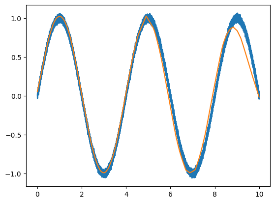